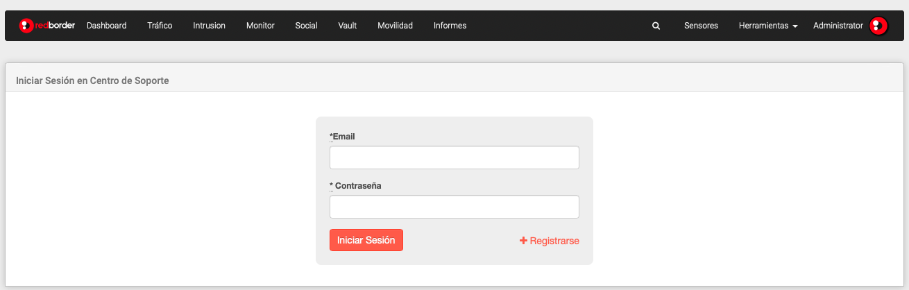

Anterior
Guía de Usuario
Siguiente
7.14. Centro de soporte
El usuario puede usar el Centro de soporte para resolver cualquier pregunta o problema relacionado con la plataforma. Es necesario estar registrado en el Centro de Soporte.

Centro de soporte
Anterior
7.13. Versión de reglas
Subir
Inicio
Siguiente
7.15. Usuarios